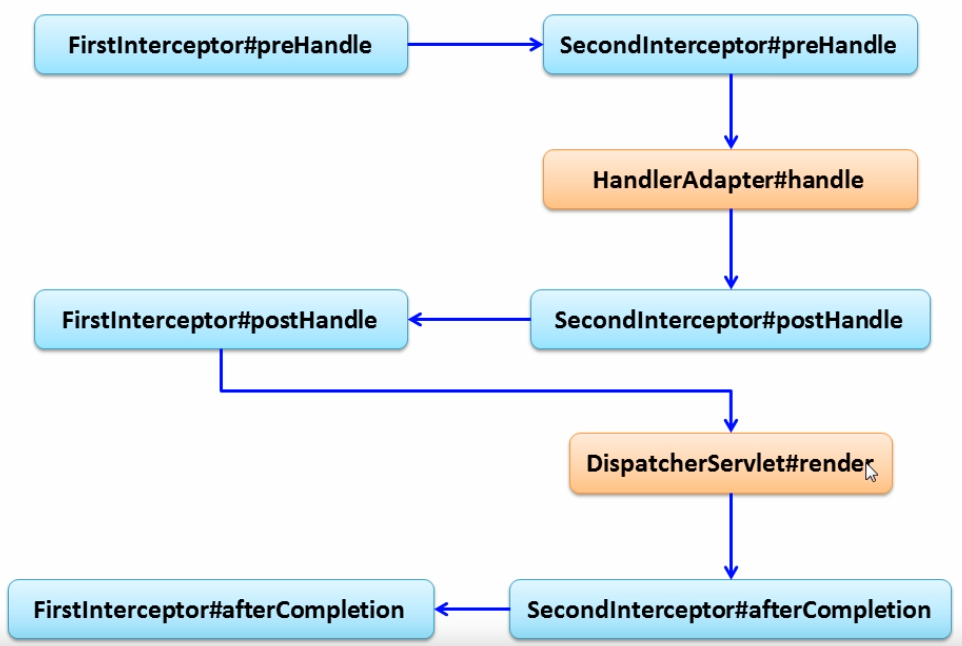
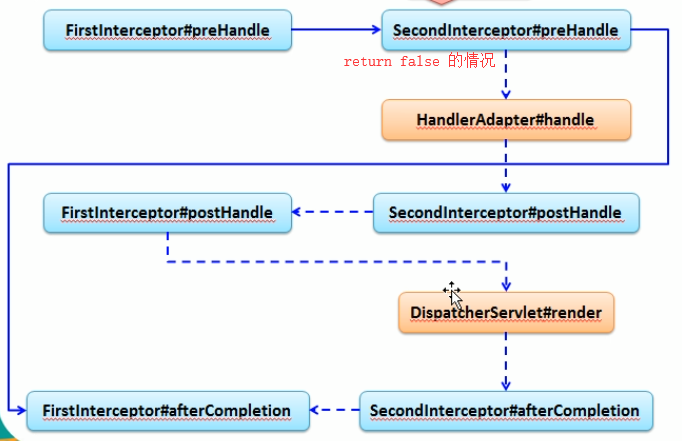
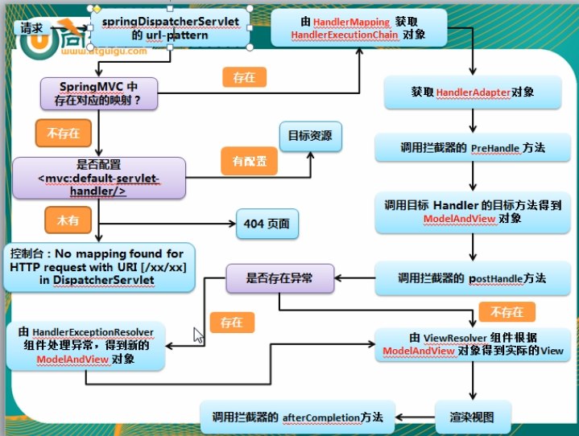

SpringMVC 概述
使用 @RequestMapping 映射请求
- 在控制器的类定义及方法定义处都可标注
@RequestMapping- 类定义处：提供初步的请求映射信息，相对于 Web 应用的根目录
- 方法处：提供进一步的细分映射信息，相对于类定义处的 URL，若类定义处未标注
@RequestMapping，则方法处标注的 URL 相对于 Web 应用的根目录
@RequestMapping除了可以使用请求 URL 映射请求外，还可以使用请求方法、请求参数及请求头映射请求@RequestMapping的 value、method、params、headers 分别表示请求 URL、请求方法、请求参数及请求头的映射条件，它们之间是与的关系，联合使用多个条件可以让请求更加精确化- params 和 headers 支持简单的表达式：
- param1：表示请求必须包含名为 param1 的请求参数
- !param1：表示请求不能包含名为 param1 的请求参数
- param1 != value1：表示请求包含名为 param1 的请求参数，但是其值不能为 value1
- { “param1 = value1”, “param2” }：表示请求必须包含名为 param1 和 param2 的两个请求参数，且 param1 参数的值必须为 value1
@RequestMapping还支持 Ant 风格的 URL- Ant 风格资源地址支持三种匹配符：
- ? ：匹配文件名中的一个字符
- * ：匹配文件名中的任意字符
- ** ：匹配多层路径
- Ant 风格资源地址支持三种匹配符：
@PathVariable映射 URL 绑定的占位符- 带占位符的 URL 是 Spring3.0 新增的功能
- 通过
@PathVariable可以将 URL 中占位符参数绑定到控制器处理方法的入参中：URL 中的 { xxx } 占位符可以通过@PathVariable('xxx')绑定到操作方法的入参中
- REST ：即 Representational State Transfer 。（资源）表现层状态转化
- 资源（ Resources ）：可以用一个 URI （统一资源定位符）来指向它
- 表现层（ Representation ）：把资源具体呈现出来的形式，叫做他的表现层
- 状态转化（ State Transfer ）：HTTP 协议中四个表示操作方式的动词：GET、POST、PUT、DELETE 分别对应四种基本操作：GET 用来获取资源；POST 用来新建资源；PUT 用来更新资源；DELETE 用来删除资源
- HiddenHttpMethodFilter：将 form 表单不支持的请求转换为标准的 http 方法
映射请求参数 & 请求头
- SpringMVC 通过分析处理方法的签名，将 HTTP 请求信息绑定到处理方法的相应入参中
- 必要时可以通过对方法及方法入参使用相应的注解（
@PathVariable，@RequestParam，@RequestHeader等） - 在处理方法入参处使用
@RequestParam可以把请求参数传递给请求方法- value：参数名
- required：是否必须，默认为 true
- defaultValue：默认值
- 使用
@RequestHeader注解可以获取请求头中的属性值 - 使用
@CookieValue注解可以让处理方法入参绑定某个 Cookie 值 - SpringMVC 会按请求参数名和 POJO 属性名进行自动匹配，自动为该对象填充属性值，支持级联属性（即属性为另一个类的实例）。注意请求参数名要与 POJO 属性名一致
- SpringMVC 支持的传入参数类型有：
- HttpServletRequest
- HttpServletResponse
- HttpSession
- java.security.Principal
- Locale
- InputStream
- OutPutStream
- Reader
- Writer
- 必要时可以通过对方法及方法入参使用相应的注解（
处理模型数据
- SpringMVC 提供了以下几种途径输出模型数据：
- ModelAndView：处理方法返回值类型为 ModelAndView 时，方法体即可通过该对象添加模型数据
- Map 及 Model：入参为 org.springframework.ui.Model、org.springframework.ui.ModelMap 或 java.util.Map 时，处理方法返回时，Map 中的数据会自动添加到模型中。SpringMVC 在调用方法前会创建一个隐含的模型对象作为模型数据的存储容器，如果方法的入参为 Map 或 Model 类型，SpringMVC 会将隐含模型引用传递给这些入参。在方法体内，开发者可以通过这个入参对象访问到模型中的所有数据，也可以向模型中添加新的属性数据
@SessionAttributes：将模型中的某个属性暂时存放到 HttpSession 中，以便多个请求之间可以共享这个属性。除了可以通过属性名指定需要放到 session 中的属性外，还可以通过模型属性的对象类型指定哪些模型属性需要放到 session 中@SessionAttribute(value = { 'user1',.'user2' }, types = User.class)：会将隐含模型中所有类型为 User.class 的属性添加到 session 中，并且也会将属性名为 user1 和 user2 的属性添加到 session 中
@ModelAttribute：方法入参使用这个注解后，入参的对象就会放入到数据模型中。注意键要与入参一致
视图和视图解析器
请求处理方法执行完成后，最终返回一个 ModelAndView 对象，对于那些返回 String，View 或者 ModelMap 等类型的处理方法，SpringMVC 也会在内部将他们装配成一个 ModelAndView 对象，他包含了逻辑名和模型对象的视图
SpringMVC 借助视图解析器得到最终的视图对象 View，处理器工作重点在生成模型数据的工作上，从而实现 MVC 的充分解耦
视图的作用是渲染模型数据，org.springframework.web.servlet 包中定义了一个高度抽象的 View 接口
视图对象由视图解析器负责实例化，由于视图是无状态的，所以不会有线程安全问题


直接访问页面不经过 Handler 可以在 SpringMVC 配置文件中加入一个
<mvc:view-controller path="" view-name=""/>，path 为 URL 地址，view-name 为视图名自定义视图可以使用 BeanNameViewResolver 来解析，注意需要在自定义视图上加上
@Component注解（将其加入 IOC 容器）。可以使用 order 属性来定义视图解析器的优先级，order 的值越小优先级越高1
2
3
4<!-- order 值越小 优先级越高 -->
<bean class="org.springframework.web.servlet.view.BeanNameViewResolver">
<property name="order" value="99"></property>
</bean>
RESTful CRUD
- users GET
- user POST
- user/id DELETE
- user/id PUT
SpringMVC 表单标签 & 处理静态资源
- form 标签
- 一般情况下通过 GET 请求获取表单页面，而通过 POST 请求提交表单页面，因此获取表单页面和提交表单页面的 URL 是相同的
- 可以通过 modelAttribute 属性指定绑定的模型属性，若没有指定该属性，则默认从 request 域中读取 command 的表单 bean，如果该属性值也不存在则会发生错误
- SpringMVC 提供了多个表单组件标签，如 <form:input />、<form:select /> 等，用来绑定表单字段的属性值，他们共有属性如下：
- path：表单字段，对应 html 元素的 name 属性，支持级联属性
- htmlEscape：是否对表单值的 HTML 特殊字符进行转换，默认为 true
- cssClass：表单组件对应的 CSS 样式类名
- cssErrorClass：表单组件的数据存在错误时，采取的 CSS 样式
- form:radiobuttons：单选框组件标签，用于构造多个单选框：
- items：可以是一个 List、String[] 或 Map
- itemValue：指定 radio 的 value 值，可以是集合中 bean 的一个属性值
- itemLabel：指定 radio 的 label 值
- delimiter：多个单选框可以通过 delimiter 指定分隔符
- form:errors：显示表单组件或数据校验所对应的错误：
- <form:errors path=“*” /> 显示表单所有的错误
- <form:errors path=“user*” /> 显示所有以 user 为前缀的属性对应的错误
- <form:errors path=“username” /> 显示特定表单对象属性的错误
- 可以使用重定向进行数据表单回显
- 处理静态资源：
- 资源 URL 不希望带 .html 或 .do 等后缀
- 若将 DispatcherServlet 请求映射配置为 / ，则 SpringMVC 将会捕获所有请求，包括静态资源的请求
- 可以在 SpringMVC 的配置文件中配置
<mvc:default-servlet-handler />的方式解决静态资源的问题<mvc:default-servlet-handler />会在 SpringMVC 上下文中定义一个 DefaultServletHttpRequestHandler，他会对进入 DispatcherServlet 的请求进行筛选，如果是发现没有经过映射的请求，就将该请求交给 Web 服务器的默认 Servlet 处理，如果不是静态资源的请求，才由 DispatcherServlet 继续处理- 一般 Web 服务器默认的 Servlet 名称都是 default ，若使用的 Web 服务器默认 Servlet 名称不是 default ，则需要通过
default-servlet-name属性进行显式指定
数据转换 & 数据格式化 & 数据校验
数据绑定流程：
- SpringMVC 主框架将 ServletRequest 对象及目标方法的入参实例传递给 WebDataBinderFactory 实例，以创建 DataBinder 实例对象
- DataBinder 调用装配在 SpringMVC 上下文中的 ConversionService 组件进行数据类型转换、数据格式化工作，将 Servlet 中的请求信息填充到入参对象中
- 调用 Validator 组件对已经绑定了请求消息的入参对象进行数据合法性校验，并最终生成 BindingData 对象
- SpringMVC 抽取 BindingResult 中的入参对象和校验错误对象，将他们赋给处理方法的响应入参
自定义类型转换器
ConversionService 是 Spring 类型转换体系的核心接口
可以使用 ConversionServiceFactoryBean 在 Spring 的 IOC 容器中定义一个 ConversionService，Spring 将自动识别出 IOC 容器中的 ConversionService，并在 Bean 属性配置及 SpringMVC 处理方法入参绑定等场合使用他进行数据转换
可以通过 ConversionServiceFactoryBean 的 converters 属性注册自定义的类型转换器
1
2
3
4
5
6
7
8
9
10
11
12
13
14
15
16
17
18
19
20
21<!-- 不使用 NumberFormat 和 DateTimeFormat -->
<bean id="conversionServiceFactoryBean" class="org.springframework.context.support.ConversionServiceFactoryBean">
<property name="converters">
<list>
<bean class="自定义的类型转换器全类名"></bean>
</list>
</property>
</bean>
<mvc:annotation-driven conversion-service="conversionServiceFactoryBean" />
<!-- 两者皆有 -->
<bean id="conversionServiceFactoryBean" class="org.springframework.format.support.FormattingConversionServiceFactoryBean">
<property name="converters">
<list>
<bean class="自定义的类型转换器全类名"></bean>
</list>
</property>
</bean>
<mvc:annotation-driven conversion-service="conversionServiceFactoryBean" />
SpringMVC 支持的转换器
- SpringMVC 定义了三种类型的转换器接口：
- Converter<S, T>：将 S 类型对象转为 T 类型对象
- ConverterFactory：将相同系列多个 “同质” Converter 封装在一起。如果希望将一种类型的对象转换为另一种类型及其子类型的对象，可使用该转换器工厂类
- GenericConverter：会根据源类对象及目标类对象所在的宿主类中的上下文信息进行类型转换
- SpringMVC 定义了三种类型的转换器接口：
关于
mvc:annotation-driven：<mvc:annotation-driven />会自动注册 RequestMappingHandlerMapping、RequestMappingHandlerAdapter 与 ExceptionHandlerExceptionResovler 三个 bean- 支持使用 ConversionService 实例对表单参数进行类型转换
- 支持使用
@NumberFormat、@DataTimeFormat注解完成数据类型的格式化 - 支持使用
@Valid注解对 JavaBean 实例进行 JSR303 验证 - 支持使用
@RequestBody和@ResponseBody注解
@InitBinder注解- 由
@InitBinder标识的方法，可以对 WebDataBinder 对象进行初始化。WebDataBinder 是 DataBinder 的子类，用于完成由表单字段到 JavaBean 属性的绑定 @InitBinder标识的方法不能有返回值，必须声明为 void@InitBinder方法的参数通常是 WebDataBinder
- 由
日期格式化
@DataTimeFormat注解可对 java.util.Date、java.util.Calender、java.long.Long 时间类型进行标注- pattern 属性：类型为字符串，指定解析/格式化字段数据的模式，如 “yyyy-MM-dd”
- iso 属性：类型为 DateTimeFormat.ISO，指定解析/格式化字段数据的 ISO 模式，包括四种：ISO.NONE（默认）、ISO.DATE（yyyy-MM-dd）、ISO.TIME（hh:mm:ss.SSSZ）、ISO.DATE_TIME（yyyy-MM-dd hh:mm:ss.SSSZ）
- style 属性：字符串类型，通过样式指定日期时间的格式，由两位字符组成，第一位表示日期的格式，第二位表示时间的格式：S：短日期/时间格式、M：中日期/时间格式、L：长日期/时间格式、F：完整日期/时间格式、-：忽略日期或时间格式
数值格式化
@NumberFormat：可对类似数字类型的属性进行标注，他有两个互斥的属性：- style 属性：类型为 NumberFormat.Style，用于指定样式类型，包括三种：Style.NUMBER（正常数字类型）、Style.CURRENCY（货币类型）、Style.PERCENT（百分数类型）
- pattern 属性：类型为 String，自定义样式，如 pattern = “#,###”；
类型转换出错的错误信息可以在入参中加入 BindingResult 来进行获取
数据校验：
- 可以使用 Hibernate Validator 来进行数据验证（实现了 JSR303 标准）
- 注意如果出现了 el 相关的报错，去 Tomcat 安装目录中找到 el-api.jar 包并删除，然后将 Hibernate Validator 中 required 文件夹中 el 相关的 jar 包复制过去即可
- 在实体类中将需要校验的字段添加 JSR303 标准中的注解
- 将 Handler 中处理方法有数据校验的入参（实体类入参）添加
@Valid注解 - 注意需要校验的 Bean 对象和其绑定结果对象或错误对象是成对出现的，他们之间不允许声明其他参数
- 错误消息的显示可以使用 <form:errors /> 标签
国际化提示信息：
在 SpringMVC 配置文件中配置国际化资源文件：
1
2
3<bean id="resourceBundleMessageSource" class="org.springframework.context.support.ResourceBundleMessageSource">
<property name="basename" value="i18n"></property>
</bean>i18n.properties 文件中键名格式：校验注解名为前缀，结合 modelAttribute、属性名及属性类名（注解名.Bean名（首字母小写）.字段名）
若数据类型转换或数据格式转换时发生错误，或该有的参数不存在，或调用处理方法时发生错误，都会在隐含模型中创建错误消息，其错误代码前缀说明如下：
- required：必要的参数不存在
- typeMismatch：在数据绑定时，发生数据类型不匹配的问题
- methodInvocation：SpringMVC 在调用处理方法时发生了错误
处理 JSON：使用 HttpMessageConverter
- 步骤：
- 加入 Jackson 的 jar 包
- 返回 List
- 处理方法以
@ResponseBody注解修饰
- HttpMessageConverter<T>
- HttpMessageConverter<T> 是 Spring3.0 新添加的一个接口，负责将请求信息转换为一个类型为 T 的对象，将类型为 T 的对象输出为响应信息
- 使用 HttpMessageConverter<T> 将请求信息转化并绑定到处理方法的入参中或将响应结果转为对应类型的响应信息，Spring 提供了两种途径：
- 使用
@RequestBody/@ResponseBody对处理方法进行标注 - 使用 HttpEntity<T>/ResponseEntity<T> 作为处理方法的入参或返回值
- 当控制器处理方法使用到
@RequestBody/@ResponseBody或者 HttpEntity<T>/ResponseEntity<T> 时，Spring 首先根据请求头或响应头的 Accept 属性选择匹配的 HttpMessageConverter，进而根据参数类型或泛型类型的过滤得到匹配的 HttpMessageConverter，若找不到可用的 HttpMessageConverter 则报错 @RequestBody/@ResponseBody不需要成对出现
- 使用
国际化
默认情况下，SpringMVC 根据 Accept-Language 参数判断客户端的本地化类型
当接收到请求时，SpringMVC 会在上下文中查找一个本地化解析器（LocalResolver），找到后使用他获取请求所对应的本地化类型信息
SpringMVC 还允许装配一个动态更改本地化类型的拦截器，这样通过指定一个请求参数就可用控制单个请求的本地化类型
本地化解析器和本地化拦截器：
AcceptHeaderLocaleResolver：根据 HTTP 请求头的 Accept-Language 参数确定本地化类型，如果没有显式定义本地化解析器，SpringMVC 使用该解析器
CookieLocaleResolver：根据指定的 Cookie 值确定本地化类型
SessionLocaleResolver：根据 Session 中特定的属性确定本地化类型
LocaleChangeInterceptor：从请求参数中获取本次请求对应的本地化类型
1
2
3
4<bean id="localeResolver" class="org.springframework.web.servlet.i18n.SessionLocaleResolver"></bean>
<mvc:interceptors>
<bean class="org.springframework.web.servlet.i18n.LocaleChangeInterceptor"></bean>
</mvc:interceptors>
使用 JSTL 的 fmt 标签可以在页面上的文本进行本地化处理
在 bean 中注入 ResourceBundleMessageSource 的实例，使用其对应的 getMessage 方法即可在 bean 中获取国际化资源文件 Locale 对应的消息
通过配置 LocalResolver 和 LocaleChangeInterceptor 即可通过超链接切换 Locale，而不再依赖于浏览器的语言设置情况
- 需要在链接中添加 locale = zh_CN 这样的国家信息
文件的上传
SpringMVC 为文件上传提供了直接的支持，这种支持是通过即插即用的 MultipartResolver 实现的，Spring 用 Jakarta Commons FileUpload 技术实现了一个 MultipartResolver 实现类：CommonsMultipartResolver
SpringMVC 上下文中默认没有装配 MultipartResolver，因此默认情况下不能处理文件的上传工作，如果想使用 Spring 的文件上传功能，需要在配置文件中配置
配置 MultipartResolver ：
defaultEncoding：必须和用户 JSP 的 pageEncoding 属性一致，以便正确解析表单的内容
为了让 CommonsMultipartResolver 正确工作，必须先将 Jakarta Commons FileUpload 及 Jakarta Commons IO 的 jar 包添加到类路径下
1
2
3
4<bean id="commonsMultipartResolver" class="org.springframework.web.multipart.commons.CommonsMultipartResolver">
<property name="defaultEncoding" value="UTF-8"></property>
<property name="maxUploadSize" value="5242880"></property>
</bean>多文件上传只需要多个相同 name 的类型为 file 的 input 类型，然后在处理方法用 MultipartFile 数组接收即可
使用拦截器
自定义拦截器：
SpringMVC 也可以使用拦截器对请求进行拦截处理，用户可以自定义拦截器来实现特定的功能，自定义的拦截器必须实现 HandlerInterceptor 接口
- preHandle()：这个方法在业务处理器处理请求之前被调用，在该方法中对用户请求 request 进行处理。如果决定该拦截器对请求进行拦截处理之后还要调用其他拦截器，或者是业务处理器去进行处理，则返回 true；如果不需要再调用其他的组件去处理请求，则返回 false
- postHandle()：这个方法在业务处理器处理完请求后，在 DispatcherServlet 向客户端返回响应前被调用，在该方法中对用户请求 request 进行处理
- afterCompletion()：这个方法在 DispatcherServlet 完全处理完请求之后被调用，可以在该方法中进行一些资源清理的操作
拦截器的配置
1
2
3
4
5
6
7
8
9
10<mvc:interceptors>
<!-- 拦截所有请求的拦截器 -->
<bean class=""></bean>
<!-- 拦截指定路径的拦截器 -->
<mvc:interceptor>
<mvc:mapping path="/users"/>
<bean class=""></bean>
</mvc:interceptor>
</mvc:interceptors>多个拦截器的执行顺序

若 SecondInterceptor 的 preHandle 方法返回了 false：
若某个拦截器已经执行了 preHandle 方法（即返回 true 的情况），则一定需要执行这个拦截器的 afterCompletion 方法，若某个拦截器执行的 preHandle 方法返回了 false，那么就不需要执行这个拦截器的 afterCompletion 方法
异常处理
SpringMVC 通过 HandlerExceptionResolver 处理程序的异常，包括 Handler 映射、数据绑定以及目标方法执行时发生的异常
ExceptionHandlerExceptionResolver：
- 主要处理 Handler 中用
@ExceptionHandler注解定义的方法 @ExceptionHandler注解定义的方法优先级问题：假设发生的异常是 NullPointerException，但是声明的异常有 RuntimeException 和 Exception，此时会根据异常的最近继承关系找到继承深度最浅的那个@ExceptionHandler注解方法，即标记了 RuntimeException 的方法- ExceptionHandlerMethodResolver 内部若找不到
@ExceptionHandler注解的话，会找@ControllerAdvice中的@ExceptionHandler注解方法
- 主要处理 Handler 中用
在
@ExceptionHandler注解修饰的方法的参数中可以加入 Exception 类型的参数，该参数对应发生的异常对象。@ExceptionHandler方法的参数中不能传入 Map，如果希望把异常信息传至页面可以使用 ModelAndView 作为返回值ResponseStatusExceptionResolver：
在异常及异常父类中找到
@ResponseStatus注解，然后使用这个注解的属性进行处理定义一个
@ResponseStatus注解修饰的异常类：1
2
public class UnauthorizedException extends RuntimeException { }若在处理方法中抛出了上述异常：若 ExceptionHandlerExceptionResolver 不解析上述异常。由于触发的异常 UnauthorizedException 带有
@ResponseStatus注解。因此会被 ResponseStatusExceptionResolver 解析到。最后响应 HttpStatus.UNAUTHORIZED 代码给客户端，HttpStatus.UNAUTHORIZED 代表响应码 401，无权限。其他的响应码参考 HttpStatus 枚举类型源码@ResponseStatus有两个属性：- value：HttpStatus 的值
- reason：自定义的错误信息
DefaultHandlerExceptionResolver：
- 对一些特殊的异常进行统一处理，例如：NoSuchRequestHandingMethodException、HttpRequestMethodNotSupportedException、HttpMediaTypeNotSupportException、HttpMediaTypeNotAcceptableException 等
SimpleMappingExceptionResolver：
如果希望对所有异常进行统一处理，可以使用 SimpleMappingExceptionResolver，他将异常类名映射为视图名，即发生异常时使用对应的视图报告异常
1
2
3
4
5
6
7
8
9
10
11<bean id="simpleMappingExceptionResolver" class="org.springframework.web.portlet.handler.SimpleMappingExceptionResolver">
<!-- 放入 request 域的异常键名 -->
<property name="exceptionAttribute" value="ex"></property>
<!-- 出现这个异常时转向的页面 -->
<property name="exceptionMappings">
<props>
<prop key="java.lang.NullPointerException">error</prop>
</props>
</property>
</bean>
SpringMVC 运行流程

在 Spring 的环境下使用 SpringMVC
- 解决 Spring 与 SpringMVC 扫描的包重合的问题：
- 要么就强制对 Handler、Service、Dao 进行分包然后两个配置文件中分别扫描
- 要么使用 exclude-filter 和 include-filter 子节点来规定只能扫描哪些注解
- SpringMVC 的 IOC 容器中的 bean 可以引用 Spring IOC 容器中的 bean，反之则不行
- 多个 Spring IOC 容器之间可以设置父子关系以实现良好的解耦。SpringMVC Web 层容器可以作为 “业务层” Spring 容器的子容器：即 Web 层容器可以引用业务层容器的 Bean，而业务层容器不能访问 Web 层容器的 Bean
SpringMVC 对比 Struts2
- SpringMVC 的入口是 Servlet，而 Struts2 是 Filter
- SpringMVC 会稍微比 Struts2 快些，SpringMVC 是基于方法设计，Struts2 是基于类，每发一次请求会实例化一个 Action
- SpringMVC 使用更加简洁，开发效率 SpringMVC 比 Struts2 高。SpringMVC 支持 JSR303，处理 Ajax 请求更方便
- Struts2 的 OGNL 表达式使页面的开发效率相比 SpringMVC 高点